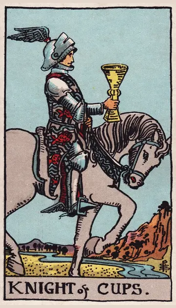

正位置カップのナイトの正位置
キーワード：ロマンス・誠実なアプローチ・優しさ
恋愛
ロマンチックな誘いや、告白がありそうな時です。
相手の気持ちあなたに、ロマンチックな気持ちを抱いているようです。
この先素敵な誘いや、告白がありそうです。
アドバイス思いを、心を込めて伝えてみましょう。
気をつけること雰囲気に酔って、現実を見落とさないように。
この先素敵な誘いや、告白がありそうです。
アドバイス思いを、心を込めて伝えてみましょう。
気をつけること雰囲気に酔って、現実を見落とさないように。
人間関係
優しい気持ちで、人と接することができる時です。
相手の気持ちあなたに、優しくしたいと感じているようです。
この先心の通う交流が生まれそうです。
アドバイス相手を喜ばせる、ささやかな気遣いをしてみましょう。
気をつけること優しさが、誰にでも良い顔にならないように。
この先心の通う交流が生まれそうです。
アドバイス相手を喜ばせる、ささやかな気遣いをしてみましょう。
気をつけること優しさが、誰にでも良い顔にならないように。
仕事・学業
思いやりのある提案が、受け入れられる時期です。
この先思いやりのある対応が、信頼につながりそうです。
アドバイス相手の立場に立った提案をしてみましょう。
気をつけること理想ばかりで、現実的な計画を忘れないように。
アドバイス相手の立場に立った提案をしてみましょう。
気をつけること理想ばかりで、現実的な計画を忘れないように。
お金
心惹かれる物や体験に、出会いやすい時です。
この先満足できる出会いがありそうです。
アドバイス心から欲しい物だけを、選びましょう。
気をつけること甘い言葉の勧誘に乗らないように。
アドバイス心から欲しい物だけを、選びましょう。
気をつけること甘い言葉の勧誘に乗らないように。
生活
暮らしに、心ときめく出来事がある時です。
この先心躍る時間を過ごせそうです。
アドバイス素敵な場所に、出かけてみましょう。
気をつけること雰囲気に流されて、予定を崩さないように。
アドバイス素敵な場所に、出かけてみましょう。
気をつけること雰囲気に流されて、予定を崩さないように。
今日の運勢
うれしい誘いがありそうな日です。
この先心がときめく出来事がありそうです。
アドバイス素敵な場所に出かけてみましょう。
気をつけることロマンを追いすぎないように。
アドバイス素敵な場所に出かけてみましょう。
気をつけることロマンを追いすぎないように。
逆位置カップのナイトの逆位置
キーワード：口先だけ・気まぐれ・期待外れ
恋愛
甘い言葉に、惑わされやすい時です。
相手の気持ちあなたへの気持ちを、言葉ほどには決めきれていないようです。
この先相手の本当の気持ちが、見えてきそうです。
アドバイス言葉より、行動を見て判断しましょう。
気をつけること甘い言葉だけを、信じすぎないように。
この先相手の本当の気持ちが、見えてきそうです。
アドバイス言葉より、行動を見て判断しましょう。
気をつけること甘い言葉だけを、信じすぎないように。
人間関係
言葉と行動が、ずれやすい時です。
相手の気持ちあなたに、調子の良いことを言ってしまっているのかもしれません。
この先誠実に接すれば、信頼を取り戻せそうです。
アドバイス約束は、できる範囲にとどめましょう。
気をつけることその場の気分で、約束しないように。
この先誠実に接すれば、信頼を取り戻せそうです。
アドバイス約束は、できる範囲にとどめましょう。
気をつけることその場の気分で、約束しないように。
仕事・学業
期待していた話が、思ったほど進まない時期です。
この先条件を確かめれば、話が進みそうです。
アドバイス話がうますぎないか、確かめましょう。
気をつけること口約束だけで、進めないように。
アドバイス話がうますぎないか、確かめましょう。
気をつけること口約束だけで、進めないように。
お金
うまい話に、惑わされやすい時です。
この先確かめれば、損は避けられそうです。
アドバイス条件を、しっかり確かめましょう。
気をつけること口約束だけで、お金を動かさないように。
アドバイス条件を、しっかり確かめましょう。
気をつけること口約束だけで、お金を動かさないように。
生活
気まぐれで、暮らしが乱れやすい時です。
この先落ち着けば、整いそうです。
アドバイス予定を、きちんと決めておきましょう。
気をつけることその場の気分で、約束を変えないように。
アドバイス予定を、きちんと決めておきましょう。
気をつけることその場の気分で、約束を変えないように。
今日の運勢
期待外れを感じやすい日です。
この先期待しすぎなければ、楽しく過ごせそうです。
アドバイス期待しすぎず、気楽に過ごしましょう。
気をつけること気まぐれな誘いに、振り回されないように。
アドバイス期待しすぎず、気楽に過ごしましょう。
気をつけること気まぐれな誘いに、振り回されないように。
このページの文章は、アプリ「ひとやすみタロット」の結果に使っている文章です。アプリでは、あなたの相談や、カードが出た位置（今の状況・これからの流れ・アドバイス）に合わせて、この中から文章を選びます。逆位置の読み方は逆位置のことをご覧ください。
「カップのナイト」が出たら、あなたの相談ではどう読む？
アプリでは、質問への答えに合わせて、カードの言葉をあなたの相談に合わせて届けます。
Android 対応・会員登録なし